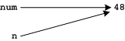
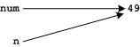

The Perils of Mutability*
This is another technical issue, but like scope you're going to bump into it at some point, and we'd better see it before you do. As with scope, if it doesn't make perfect sense on first reading make a mental note of it, and come back to it when you suspect you are bumping into it hard.
Immutability
Consider the function increment below. What do you suppose it does? Try running the code below to see if your guess is correct.
# increment.py
def increment(n):
n = n + 1
num = 48
increment( num )
print numMost students expect the value 49 to be printed and are surprised when 48
is instead. After all it looks as though increment should, well, increment
the value it is passed and since it was passed 48 it should have incremented
it to 49 and printing num should display this value. The programmer might
even have intended this, but has been foiled by the fact that in Python
numbers, like strings, are immutable.
When increment begins to run we can picture memory looking like this,

Now what happens when the line n = n + 1 is executed? The
processor fetches the value n names, i.e. 48, adds one to it to get 49 and
then stores this new value with the name n. Memory now looks
like this,

Why doesn't it look like this?

Because numbers are immutable, so the 48 can't be changed into 49 or into
anything else for that matter. Instead a new value, 49, is created and
assigned to the name n, and this doesn't affect the value referred
to by the name num.
Aside
If you want an increment function you would write and use it slightly differently:
def increment(n):
return n+1
num = 48
num = increment(num)
print numTry it and see.
Mutability
Unlike numbers and strings, lists are mutable so they can be affected when passed to functions, e.g.
def increment(seq):
seq.append(42)
lst = [48]
increment( lst )
print lstWhat result do you expect this to produce? Try it to see if you're right.
The mutability of lists can surprise us even without invoking a function. Consider this code fragment. Make your prediction then run it to see if you're right,
l = [ 'Tim' ]
n = l
l.append( 'Joyce' )
print l
print nThings can get trickier. Try your predictive abilities on this,
a = 'Tim'
b = 'Tom'
lst = [b, a]
a = 'Matt'
lst[1] = lst[0]
print lst* Neither mutable nor immutable values behave the way most students expect, but mutability trips them up more often than immutability so the page is named for the more dangerous case.